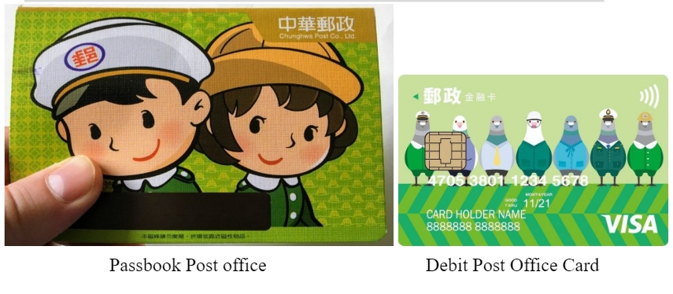

WHAT IS POST OFFICE ACCOUNT (郵局 / yóujú)
Can foreigner open bank?

The business items of Chunghwa Post are quite diverse, mainly postal and financial services: postal services include mail delivery and express delivery , and financial services include postal savings , exchange , simple life insurance , housing loans , financial product agency sales , etc. Other service items include philately , commodity sales agency, and asset management , which are approved by the Ministry of Communications of the Republic of China. As of the end of 2012, Chunghwa Post had 1,322 post offices (excluding responsible central bureaus ) and 1,261 commissioned agencies (including 631 post agencies and 630 stamp agencies) across the country; The branch of the bank is the bank with the most business bases, far exceeding the 288 of the second-ranked cooperative treasury commercial bank
Post Office account is a savings account that can be used while you are in Taiwan. You will also receive a debit card that functions like an ordinary ATM card.

REQUIRED DOCUMENTS
- Passport (original and photocopy)
- ARC (original and photocopy)
- Student ID (original and photocopy)
- Name stamp (Yìnzhāng/印章)
- Initial deposit of 1000 NTD
- Taiwan mobile number
- Fill in the account opening form (can be picked up at the post office)
Accounts can be opened at the nearest post office, bringing complete documents. Debit/ATM cards can also be requested at the same time as account opening. 